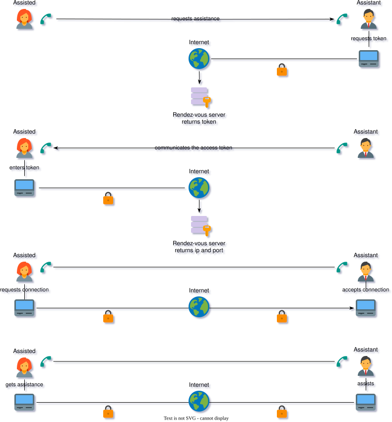
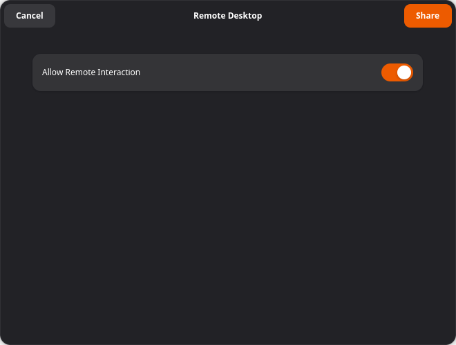

Hilfe
Für Rückmeldungen bin ich Ihnen sehr dankbar! Posten Sie eine Frage oder erfassen Sie ein Issue auf GitHub.
Schematische Darstellung des Verbindungsaufbaus

Wayland
Wenn auf der Seite des Assistierten Wayland im Einsatz ist, muss die Freigabe des Bildschirms und dessen Fernsteuerung explizit erlaubt werden.
Der Dialog "Bildschirmfreigabe" erscheint automatisch, sobald der Assistent die Verbindung aufgebaut hat.
Der Assistierte muss die Freigabe bestätigen, sonst kann der Assistent den Bildschirm nicht sehen und auch nicht steuern:

Bekannte Probleme mit Wayland
Ist Dayon! auf Seite des Assistierten als Snap oder Flatpak installiert, funktioniert die Fernsteuerung in Kombination mit Wayland nicht, oder zumindest nicht zuverlässig.
Abhilfe
Falls möglich, die Wayland Session auf Xorg umstellen:

Sollte dies, wie z.B. bei Ubuntu ab Version 26.04, nicht möglich sein, dann kann Dayon! entweder:
- ohne Installation als AppImage oder Selbstextrahierendes Script gestartet werden
- oder via tgz oder Debianpaket installiert werden.
Dayon! Heimverzeichnis
Das Verzeichnis .dayon wird im Standardbenutzerverzeichnis des eingelogten Benutzers oder via
JAVA-Property definierten Benutzerverzeichnis user.home erstellt und enthält nebst den
gespeicherten Einstellungen auch die Logdatei(en).
Zertifikatsfingerabdrücke
Um "Men in the Middle"-Angriffe zu verhindern, werden die Zertifikatsfingerabdrücke der beiden verbindenden Seiten angezeigt. Die beiden Fingerabdrücke müssen übereinstimmen - tun sie es nicht, dann ist etwas Merkwürdiges im Gange. Diese zusätzliche Sicherheitsfunktion wurde mit Version 13 von Dayon eingeführt.

Achtung: Um die Verbindung mit älteren Clients (vor Version 13) zu ermöglichen, muss der Kompatibilitätsmodus
 aktiviert werden.
aktiviert werden.
Dies ist eine Übergangslösung, bitte aktualisieren Sie die Assistierten so bald wie möglich.
CRC Checksumme
Auf der Seite des Assistierten wird der Bildschirm in Kacheln genannte Bereiche aufgeteilt. Bloss veränderte Kacheln werden über das Netzwerk zum Assistenten gesendet. Um zu entscheiden ob sich eine Kachel seit der letzten Erfassung verändert hat, wird ein CRC-Code berechnet (ein eindeutiger Wert für die in einer Kachel enthaltenen Pixel). Dieses Verfahren ist hinsichtlich der Verarbeitungsgeschwindigkeit nicht die optimale Lösung. Es kann mitunter vorkommen, dass einige veränderte Kacheln nicht an den Assistenten gesandt werden.
Bis jetzt konnte rein durch intensives Testen Verfälschungen von einigen Pixeln entdeckt werden. Visuell konnte bis anhin nichts ernsthaft störendes festgestellt werden. Sollte in der Praxis in dieser Hinsicht Mal etwas aus dem Ruder laufen, kann entweder die Applikation des Assistierten neu gestartet, oder dessen Puffer zurückgesetzt werden. (Abfallkübelsymbol).